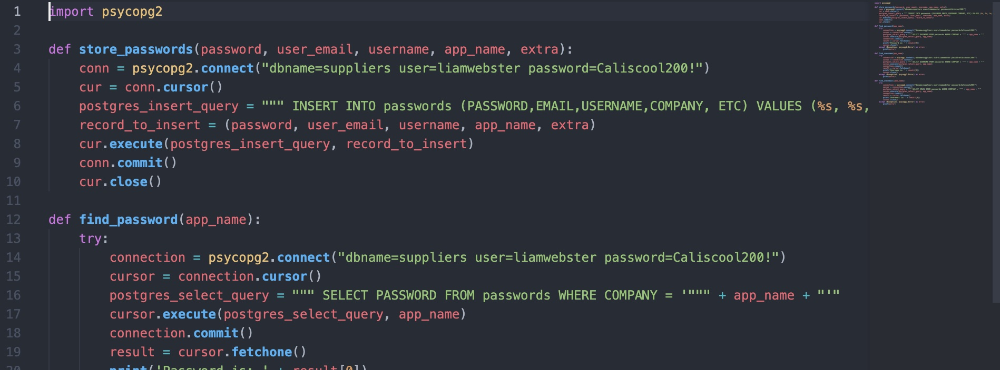
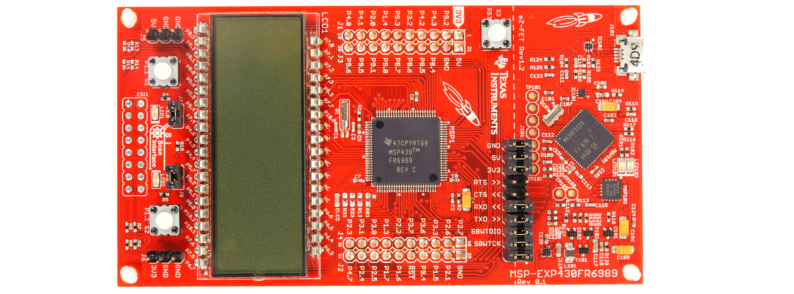
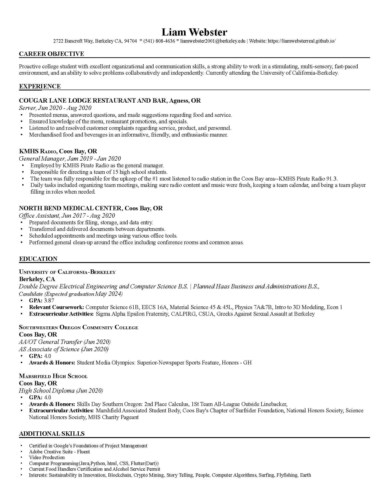

Intro
Hi, my name is Liam Webster. I am a proactive college student with excellent organizational and communication skills. A strong ability to work in a stimulating, multi-sensory, fast-paced environment, with an ability to solve problems collaboratively and independently. Currently attending the University of California-Berkeley studying Electrical Engineering and Computer Science. Current pursuits entail machine learning and decentralized computer security.
A little bit more about me. I am from a small town on the Oregon Coast. I’m a young hearted excited individual. I received my high school diploma from Marshfield High School. During that time I also attended Southwestern Oregon Community College and received my Associates of Arts and Associates of Sciences graduating with honors. I am now attending UC Berkeley currently studying Electrical Engineering and Computer Science; with aims to earn certification from the Jacobs Institute of Design in Innovative Design. I enjoy thinking, learning and bringing ideas to life. I am a hobby junky-- some of which include: surfing, backpacking, fly-fishing, coding, and automotive tinkering. I love projects and working with people-- reach out if your looking for an extra set of hands. Thanks for the time.
Projects
Software:

Version Control System:
Date: April 2021
Description: Implemented a version control system via Java. Based on Git, with features such as add, commit, branch, checkout, and log all functional.
Project Automation:
Date: July 2021
Description: Engineered a "new project" automation script. Ran from the command line; the script automates the creation of a project. Creating a directory in my local projects folder, creating a README.md, creating a GitHub repository, and pushing an initial commit.
Account Manager:
Date: May 2021
Description: Engineered a password managing solution; using a local PostgreSQL database and a Python user interface. Features: username|email|password|misc categorical storage, and a fully original encryption algorithm based on RSA.
Transit App:
Date: October 2021
Description: Engineered a mobile phone transit app, implemented using flutter(IOS, Android) and a Firebase database. Features: real-time bus/marker updates, clean user interface, busline details, and bus status.
View Project
RISC-V Instruction to Binary/Hexadecimal Instruction:
Date: Feburary 2022
Description: Website for converting binary/hex instruction into RISC-V instruction. Implemented via html, css, and Javascript.
View Project
Hardware:

S1XT33N - a voice controlled car:
Date: March 2022
A voice-controlled car, able to respond to turn right, left, and go straight commands. Powered by an MSP launchpad the project implements key system components: analog sensor interface, classification of collected data, and system control(closed loop feedback). This project was completed as part of UCB's EECS: 16b course curriculum.
View Project
CV

Contact